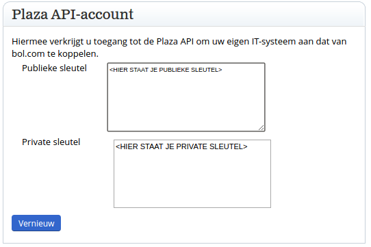
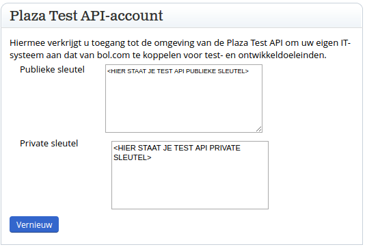
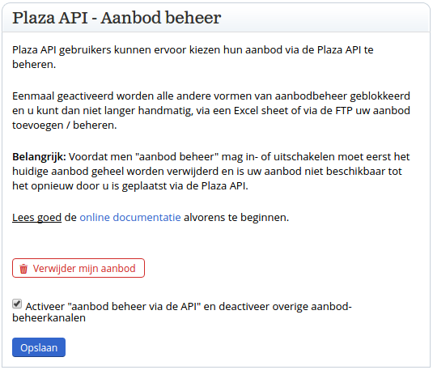
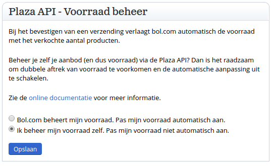

De Bol.com configuratie moet ingesteld worden op uw Bol.com verkopersaccount
Profiel
Wanneer u klikt op de knop Profiel bewerken kunt u de instellingen van uw account aanpassen. De volgende instellingen moeten nagelopen worden.
Plaza API-account
Hier vindt u de API sleutels die in de applicatie ingevoerd moeten worden.
Dit zijn de live keys, gebruik deze dus pas nadat u de tests succesvol hebt doorlopen.

Plaza Test API-account
Hier vindt u de API sleutels voor de testverbinding. Begin met deze gegevens.
Dit zijn de test API keys, begin hiermee!

Plaza API - Aanbod beheer
Met de Bol.com Plaza API connector module kunt u uw producten beheren vanuit Prestashop. Om dit te doen is het nodig om op Bol.com uw complete assortiment te verwijderen, waarna u het via Prestashop weer toe kunt voegen.
U kunt dit doen door op de rode knop Verwijder mijn aanbod te klikken. Houdt er rekening mee dat u dit pas doet wanneer u de tests succesvol hebt doorlopen.
Zet het vinkje bij Activeer "aanbod beheer via de API" en deactiveer overige aanbod-beheerkanalen, nu kunt u uw producten beheren via Prestashop. Let op: er zit een kleine vertraging in het activeren van de functionaliteit en het gebruik kunnen maken van de functies in Prestashop. Houdt rekening met 15 minuten vertraging.
Het is aan te raden om eerst een Excel bestand van Bol.com te downloaden. Op die manier kunt u snel een backup terugzetten, mocht er iets toch niet goed verlopen.

Plaza API - Voorraad beheer
De Bol.com Plaza API connector module stuurt een bericht naar Bol.com wanneer de voorraad veranderd. U kunt er dus voor kiezen om uw voorraad zelf te beheren. Let op dat er dan wel een kleine vertraging tussen het afboeken en melden zit. U kunt het vinkje ook aan laten staan, maar dan kan voorraad dubbel afgeboekt worden.
